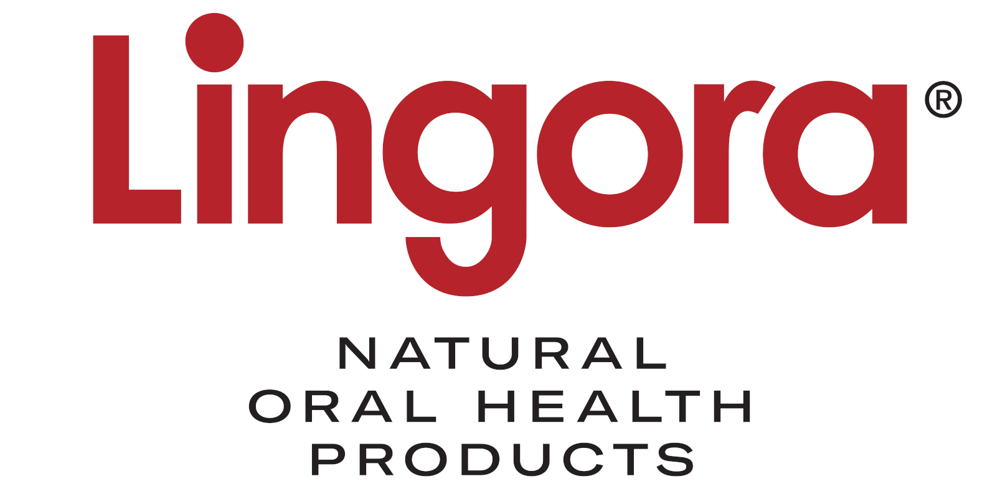
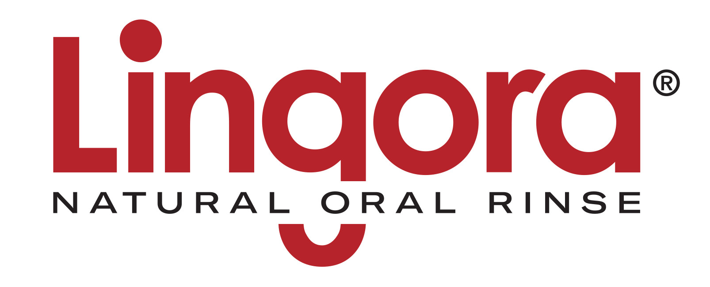
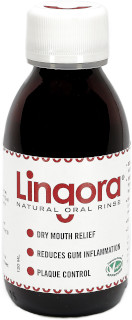

A natural innovation to aid oral home care.

Say hello! to Lingora®
The name, Lingora, incorporates the word Lingonberry with Oral to emphasise its all natural ingredients and oral health benefits.
Using a patented method, the natural occurring sugar-content of the lingonberry juice has been reduced by fermentation to a safe level for oral use.
Lingora producst are additive-free and suitable for all ages. Due to its pure natural ingredients, products are harmless if swallowed.
Dr Pirjo Pärnänen (Associate Professor in Oral Microbiology, DMD, PhD) has been researching fermented lingonberry juice for over 15 years, and has conducted a number of clinical studies with impressive outcomes.
Lingora® Natural Oral Rinse

REDUCES inflammation of the gums and plaque

Lingora Natural Oral Rinse protects the oral membrane from environmental stress and is beneficial for oral health.
It prevents inflammation of the gums and assists the healing of gum disease. It also reduces the symptoms caused by mouth dryness by increasing saliva secretion.
The products carries the Vegetarian Society Approved vegan trademark and is a registered medical device in the UK and the EU with its UKCA and CE markings.
Lingora® Natural Oral Spray provides instant dry-mouth relief while on the move.
This clinically tested product is packed in a lightweight 20 ml atomiser spray pump bottle, making it easy to carry wherever life takes you.